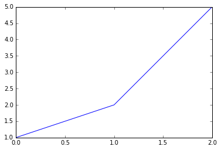
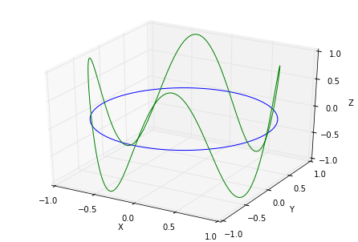

<!DOCTYPE html>
<!--[if IE 8]><html class="no-js lt-ie9" lang="en" > <![endif]-->
<!--[if gt IE 8]><!--> <html class="no-js" lang="en" > <!--<![endif]-->
<head>
  <meta charset="utf-8">
  <meta http-equiv="X-UA-Compatible" content="IE=edge">
  <meta name="viewport" content="width=device-width, initial-scale=1.0">
  
  <meta name="author" content="Ugo Sparks">
  <link rel="shortcut icon" href="../img/favicon.ico">
  <title>Python for Education - ugo_py_doc</title>
  <link href='https://fonts.googleapis.com/css?family=Lato:400,700|Roboto+Slab:400,700|Inconsolata:400,700' rel='stylesheet' type='text/css'>

  <link rel="stylesheet" href="../css/theme.css" type="text/css" />
  <link rel="stylesheet" href="../css/theme_extra.css" type="text/css" />
  <link rel="stylesheet" href="../css/highlight.css">
  
  <script>
    // Current page data
    var mkdocs_page_name = "Python for Education";
    var mkdocs_page_input_path = "Python for Education.md";
    var mkdocs_page_url = "/Python for Education/";
  </script>
  
  <script src="../js/jquery-2.1.1.min.js"></script>
  <script src="../js/modernizr-2.8.3.min.js"></script>
  <script type="text/javascript" src="../js/highlight.pack.js"></script> 
  
  <script>
      (function(i,s,o,g,r,a,m){i['GoogleAnalyticsObject']=r;i[r]=i[r]||function(){
      (i[r].q=i[r].q||[]).push(arguments)},i[r].l=1*new Date();a=s.createElement(o),
      m=s.getElementsByTagName(o)[0];a.async=1;a.src=g;m.parentNode.insertBefore(a,m)
      })(window,document,'script','//www.google-analytics.com/analytics.js','ga');

      ga('create', 'UA-93008985-2', 'auto');
      ga('send', 'pageview');
  </script>
  
</head>

<body class="wy-body-for-nav" role="document">

  <div class="wy-grid-for-nav">

    
    <nav data-toggle="wy-nav-shift" class="wy-nav-side stickynav">
      <div class="wy-side-nav-search">
        <a href=".." class="icon icon-home"> ugo_py_doc</a>
        <div role="search">
  <form id ="rtd-search-form" class="wy-form" action="../search.html" method="get">
    <input type="text" name="q" placeholder="Search docs" />
  </form>
</div>
      </div>

      <div class="wy-menu wy-menu-vertical" data-spy="affix" role="navigation" aria-label="main navigation">
	<ul class="current">
	  
          
            <li class="toctree-l1">
		
    <a class="" href="..">Home</a>
	    </li>
          
            <li class="toctree-l1">
		
    <span class="caption-text">Basics & More</span>
    <ul class="subnav">
                <li class="">
                    
    <a class="" href="../Py_CS/">Python Cheat Sheets</a>
                </li>
                <li class="">
                    
    <a class="" href="../Python_Preliminaries/">Python Preliminaries</a>
                </li>
                <li class="">
                    
    <a class="" href="../Python_Nice_to_Have/">Python Nice to Have</a>
                </li>
                <li class="">
                    
    <a class="" href="../Freeze_the_Code/">Freeze the Code</a>
                </li>
                <li class="">
                    
    <a class="" href="../Decorators/">Decorators</a>
                </li>
                <li class="">
                    
    <a class="" href="../Write_Better_Python/">Write Better Python with PEP</a>
                </li>
                <li class="">
                    
    <a class="" href="../Regex/">Regular Expressions (REGEX)</a>
                </li>
                <li class="">
                    
    <a class="" href="../Databases/">Databases</a>
                </li>
                <li class="">
                    
    <a class="" href="../Datetime/">Datetime</a>
                </li>
                <li class="">
                    
    <a class="" href="../Execute_Highlighted_Python_Code_in_gedit/">Execute Highlighted Python Code in gedit</a>
                </li>
    </ul>
	    </li>
          
            <li class="toctree-l1">
		
    <span class="caption-text">SciPy Stack</span>
    <ul class="subnav">
                <li class="">
                    
    <a class="" href="../Scipy_CS/">Scipy Stack Cheat Sheets</a>
                </li>
                <li class="">
                    
    <a class="" href="../JN_CS/">Jupyter Notebook Cheat Sheets</a>
                </li>
                <li class="">
                    
    <a class="" href="../Scientific Python (the SciPy Stack)/">Scientific Python (the SciPy Stack)</a>
                </li>
                <li class="">
                    
    <a class="" href="../Importing Data into Python/">Importing Data into Python</a>
                </li>
                <li class="">
                    
    <a class="" href="../Python for Data Science/">Python for Data Science</a>
                </li>
                <li class="">
                    
    <a class="" href="../Tidy_Data_in_Python/">Tidy Data in Python</a>
                </li>
                <li class="">
                    
    <a class="" href="../Lists/">Lists</a>
                </li>
                <li class="">
                    
    <a class="" href="../IPython Notebook/">IPython Notebook, Collection</a>
                </li>
                <li class="">
                    
    <a class="" href="../Python Numpy Arrays/">Python Numpy Arrays</a>
                </li>
                <li class="">
                    
    <a class="" href="../Vectors and Arrays (Linear Algebra)/">Vectors and Arrays (Linear Algebra)</a>
                </li>
                <li class="">
                    
    <a class="" href="../Matplotlib, Python Plotting/">Matplotlib, Python Plotting</a>
                </li>
                <li class="">
                    
    <a class="" href="../Viewing+3D+Volumetric+Data+With+Matplotlib/">Viewing 3D Volumetric Data With Matplotlib</a>
                </li>
                <li class="">
                    
    <a class="" href="../Seaborn, Python Statistical Data Visualization Library/">Seaborn, Python's Statistical Data Visualization Library</a>
                </li>
                <li class="">
                    
    <a class="" href="../Pandas+DataFrames/">Pandas DataFrames</a>
                </li>
                <li class="">
                    
    <a class="" href="../Write Idiomatic Pandas Code/">Write Idiomatic Pandas Code</a>
                </li>
                <li class="">
                    
    <a class="" href="../Exploratory Data Analysis/">Exploratory Data Analysis</a>
                </li>
                <li class="">
                    
    <a class="" href="../Intro to data.world in Python/">Intro to data.world in Python</a>
                </li>
                <li class="">
                    
    <a class="" href="../Python+And+Excel/">Python and Excel</a>
                </li>
                <li class="">
                    
    <a class="" href="../Overview_of_scikit-learn/">Overview of scikit-learn</a>
                </li>
                <li class="">
                    
    <a class="" href="../k-NN_Linear_regression_Logit_Scaling_Centering_Noise/">k-NN, Linear regression, Logit, Scaling, Centering, Noise</a>
                </li>
                <li class="">
                    
    <a class="" href="../Time_Series_Analysis/">Time Series Analysis</a>
                </li>
                <li class="">
                    
    <a class="" href="../Sentiment_Analysis_with_Twitter/">Sentiment Analysis with Twitter</a>
                </li>
                <li class="">
                    
    <a class="" href="../EDA_Machine_Learning_Feature_Engineering_and_Kaggle/">EDA, Machine Learning, Feature Engineering, and Kaggle</a>
                </li>
    </ul>
	    </li>
          
            <li class="toctree-l1">
		
    <span class="caption-text">Courses</span>
    <ul class="subnav">
                <li class="">
                    
    <a class="" href="../Apprenez a programmer en Python/">Apprenez à programmer en Python</a>
                </li>
                <li class="">
                    
    <a class="" href="../Codecademy Python/">Codecademy Python</a>
                </li>
                <li class="">
                    
    <a class="" href="../Learn Python the Hard Way/">Learn Python the Hard Way</a>
                </li>
                <li class="">
                    
    <a class="" href="../Python Code Snippets/">Python Code Snippets</a>
                </li>
                <li class="">
                    
    <a class="" href="../Introduction to Python/">Introduction to Python</a>
                </li>
    </ul>
	    </li>
          
            <li class="toctree-l1">
		
    <span class="caption-text">Manuals</span>
    <ul class="subnav">
                <li class="">
                    
    <a class="" href="../Automate the Boring Stuff with Python/">Automate the Boring Stuff with Python</a>
                </li>
                <li class="">
                    
    <a class="" href="../Real_Python/">Real Python</a>
                </li>
                <li class="">
                    
    <a class="" href="../Managing Your Biological Data with Python/">Managing Your Biological Data with Python</a>
                </li>
                <li class=" current">
                    
    <a class="current" href="./">Python for Education</a>
    <ul class="subnav">
            
    <li class="toctree-l3"><a href="#25-python-lists">2.5, Python Lists</a></li>
    

    <li class="toctree-l3"><a href="#27-input-from-the-keyboard">2.7, Input from the Keyboard</a></li>
    

    <li class="toctree-l3"><a href="#211-line-joining">2.11, Line joining</a></li>
    

    <li class="toctree-l3"><a href="#214-more-on-strings-and-lists">2.14, More on Strings and Lists</a></li>
    

    <li class="toctree-l3"><a href="#recap-from-the-above-snippets">Recap from the Above (Snippets)</a></li>
    

    <li class="toctree-l3"><a href="#215-python-modules-and-packages">2.15, Python Modules and Packages</a></li>
    

    <li class="toctree-l3"><a href="#216-files-inputouput">2.16, Files Input/Ouput</a></li>
    

    <li class="toctree-l3"><a href="#217-formatted-printing">2.17, Formatted Printing</a></li>
    

    <li class="toctree-l3"><a href="#218-exception-handling">2.18, Exception Handling</a></li>
    

    <li class="toctree-l3"><a href="#220-writing-gui-programs">2.20, Writing GUI Programs</a></li>
    

    <li class="toctree-l3"><a href="#221-object-oriented-programming-in-python">2.21, Object-Oriented Programming in Python</a></li>
    

    <li class="toctree-l3"><a href="#3-arrays-and-matrices">3, Arrays and Matrices</a></li>
    
        <ul>
        
            <li><a class="toctree-l4" href="#31-the-numpy-module">3.1, The NumPy Module</a></li>
        
            <li><a class="toctree-l4" href="#32-vectorized-functions">3.2, Vectorized Functions</a></li>
        
        </ul>
    

    <li class="toctree-l3"><a href="#4-data-visualization">4, Data visualization</a></li>
    
        <ul>
        
            <li><a class="toctree-l4" href="#41-the-matplotlib-module">4.1, The Matplotlib Module</a></li>
        
        </ul>
    

    <li class="toctree-l3"><a href="#5-type-setting-using-latex">5, Type Setting Using \LaTeX</a></li>
    

    <li class="toctree-l3"><a href="#6-numerical-methods">6, Numerical Methods</a></li>
    
        <ul>
        
            <li><a class="toctree-l4" href="#65-finding-roots-of-an-equation">6.5, Finding Roots of an Equation</a></li>
        
            <li><a class="toctree-l4" href="#66-system-of-linear-equations">6.6, System of Linear Equations</a></li>
        
            <li><a class="toctree-l4" href="#67-least-squares-fitting">6.7, Least Squares Fitting</a></li>
        
            <li><a class="toctree-l4" href="#68-interpolation">6.8, Interpolation</a></li>
        
        </ul>
    

    </ul>
                </li>
    </ul>
	    </li>
          
        </ul>
      </div>
      &nbsp;
    </nav>

    <section data-toggle="wy-nav-shift" class="wy-nav-content-wrap">

      
      <nav class="wy-nav-top" role="navigation" aria-label="top navigation">
        <i data-toggle="wy-nav-top" class="fa fa-bars"></i>
        <a href="..">ugo_py_doc</a>
      </nav>

      
      <div class="wy-nav-content">
        <div class="rst-content">
          <div role="navigation" aria-label="breadcrumbs navigation">
  <ul class="wy-breadcrumbs">
    <li><a href="..">Docs</a> &raquo;</li>
    
      
        
          <li>Manuals &raquo;</li>
        
      
    
    <li>Python for Education</li>
    <li class="wy-breadcrumbs-aside">
      
    </li>
  </ul>
  <hr/>
</div>
          <div role="main">
            <div class="section">
              
                <div class="toc"><span class="toctitle">CONTENT</span><ul>
<li><a href="#2-programming-in-python">2, Programming in Python</a><ul>
<li><a href="#25-python-lists">2.5, Python Lists</a></li>
<li><a href="#27-input-from-the-keyboard">2.7, Input from the Keyboard</a></li>
<li><a href="#211-line-joining">2.11, Line joining</a></li>
<li><a href="#214-more-on-strings-and-lists">2.14, More on Strings and Lists</a></li>
<li><a href="#recap-from-the-above-snippets">Recap from the Above (Snippets)</a></li>
<li><a href="#215-python-modules-and-packages">2.15, Python Modules and Packages</a></li>
<li><a href="#216-files-inputouput">2.16, Files Input/Ouput</a></li>
<li><a href="#217-formatted-printing">2.17, Formatted Printing</a></li>
<li><a href="#218-exception-handling">2.18, Exception Handling</a></li>
<li><a href="#220-writing-gui-programs">2.20, Writing GUI Programs</a></li>
<li><a href="#221-object-oriented-programming-in-python">2.21, Object-Oriented Programming in Python</a></li>
</ul>
</li>
<li><a href="#3-arrays-and-matrices">3, Arrays and Matrices</a><ul>
<li><a href="#31-the-numpy-module">3.1, The NumPy Module</a></li>
<li><a href="#32-vectorized-functions">3.2, Vectorized Functions</a></li>
</ul>
</li>
<li><a href="#4-data-visualization">4, Data visualization</a><ul>
<li><a href="#41-the-matplotlib-module">4.1, The Matplotlib Module</a></li>
</ul>
</li>
<li><a href="#5-type-setting-using-latex">5, Type Setting Using \LaTeX</a></li>
<li><a href="#6-numerical-methods">6, Numerical Methods</a><ul>
<li><a href="#65-finding-roots-of-an-equation">6.5, Finding Roots of an Equation</a></li>
<li><a href="#66-system-of-linear-equations">6.6, System of Linear Equations</a></li>
<li><a href="#67-least-squares-fitting">6.7, Least Squares Fitting</a></li>
<li><a href="#68-interpolation">6.8, Interpolation</a></li>
</ul>
</li>
</ul>
</div>
<hr />
<p><strong>Foreword</strong></p>
<p>Notes and code snippets. IPython 2 &amp; 3. From Inter University Accelerator Centre, 2010. Creative Commons.</p>
<hr />
<h4 id="2-programming-in-python">2, Programming in Python<a class="headerlink" href="#2-programming-in-python" title="Permanent link">&para;</a></h4>
<h5 id="25-python-lists">2.5, Python Lists<a class="headerlink" href="#25-python-lists" title="Permanent link">&para;</a></h5>
<pre><code class="python">a = 'hello world'

# extract, subset
print(a[3:5])
print(a[6:])
print(a[:5])
</code></pre>

<pre><code>lo
world
hello
</code></pre>
<pre><code class="python">a = [1, 2]

print(a)
print(a * 2) # double print
print(a + [1, 1]) # concatenate
</code></pre>

<pre><code>[1, 2]
[1, 2, 1, 2]
[1, 2, 1, 1]
</code></pre>
<pre><code class="python">b = [1,2,a]
print(b) # embed

b[2] = 3
print(b) # change a mutable from the above list

# Output:
</code></pre>

<pre><code>[1, 2, [1, 2]]
[1, 2, 3]
</code></pre>
<h5 id="27-input-from-the-keyboard">2.7, Input from the Keyboard<a class="headerlink" href="#27-input-from-the-keyboard" title="Permanent link">&para;</a></h5>
<ul>
<li><code>input</code> for numeric data.</li>
<li><code>raw_input</code> for string data.</li>
</ul>
<pre><code class="python">x = input('Enter an integer (x): ')
y = input('Enter another one (y): ')

print('The sum is = ', x + y) # print as numeric, input
</code></pre>

<pre><code>Enter an integer (x): 1
Enter another one (y): 2
('The sum is = ', 3)
</code></pre>
<pre><code class="python">t = raw_input('Enter an integer: ')
u = raw_input('Enter another one: ')

print('The sum is = ', t + u) # print as string, raw input
</code></pre>

<pre><code>Enter an integer: 2
Enter another one: 3
('The sum is = ', '23')
</code></pre>
<pre><code class="python">v = input('Enter an integer: ')
w = input('Enter another one: ')

print('The sum is = ', str(v) + str(w)) # print as string, input changes into a string
</code></pre>

<pre><code>Enter an integer: 1
Enter another one: 1
('The sum is = ', '11')
</code></pre>
<pre><code class="python">y1 = raw_input('Enter an integer: ')
y2 = raw_input('Enter another one: ')

print( 'The sum is = ', int(y1) + int(y2)) # print as numeric, raw input changed into integer
</code></pre>

<pre><code>Enter an integer: 2
Enter another one: 2
('The sum is = ', 4)
</code></pre>
<pre><code class="python">y3 = raw_input('Enter an integer: ')
y4 = raw_input('Enter another one: ')

print( 'The sum is = ', float(y3) + float(y4)) # print as numeric, raw input changed into float
</code></pre>

<pre><code>Enter an integer: 1
Enter another one: 2
('The sum is = ', 3.0)
</code></pre>
<h5 id="211-line-joining">2.11, Line joining<a class="headerlink" href="#211-line-joining" title="Permanent link">&para;</a></h5>
<pre><code class="python">year = input('year: ')
month = input('month: ')
if 1900 &lt; year &lt; 2100 and 1 &lt;= month &lt;= 12 :
    print('I am so long and will not fit in a single line')
</code></pre>

<pre><code>year: 2016
month: 10
I am so long and will not fit in a single line
</code></pre>
<pre><code class="python"># simplify the code, shorten the line
year = input('year: ')
month = input('month: ')
if 1900 &lt; year &lt; 2100\
 and 1 &lt;= month &lt;= 12 :
    print('I am so long and will\
 not fit in a single line')
</code></pre>

<pre><code>year: 2016
month: 10
I am so long and will not fit in a single line
</code></pre>
<pre><code class="python"># object, variable type
print(type(4.5))
</code></pre>

<pre><code>&lt;type 'float'&gt;
</code></pre>
<h5 id="214-more-on-strings-and-lists">2.14, More on Strings and Lists<a class="headerlink" href="#214-more-on-strings-and-lists" title="Permanent link">&para;</a></h5>
<pre><code class="python">s = 'hello world'

# string length
print(len(s))
print(s.upper())
</code></pre>

<pre><code>11
HELLO WORLD
</code></pre>
<pre><code class="python"># help with
help(str)
</code></pre>

<pre><code>Help on class str in module __builtin__:

class str(basestring)
 |  str(object='') -&gt; string
 |  
 |  Return a nice string representation of the object.
 |  If the argument is a string, the return value is the same object.
 |  
 |  Method resolution order:
 |      str
 |      basestring
 |      object
 |  
 |  Methods defined here:
 |  
 |  __add__(...)
 |      x.__add__(y) &lt;==&gt; x+y
 |  
 |  __contains__(...)
 |      x.__contains__(y) &lt;==&gt; y in x
 |  
 |  __eq__(...)
 |      x.__eq__(y) &lt;==&gt; x==y
 |  
 |  __format__(...)
 |      S.__format__(format_spec) -&gt; string
 |      
 |      Return a formatted version of S as described by format_spec.
 |  
 |  __ge__(...)
 |      x.__ge__(y) &lt;==&gt; x&gt;=y
 |  
 |  __getattribute__(...)
 |      x.__getattribute__('name') &lt;==&gt; x.name
 |  
 |  __getitem__(...)
 |      x.__getitem__(y) &lt;==&gt; x[y]
 |  
 |  __getnewargs__(...)
 |  
 |  __getslice__(...)
 |      x.__getslice__(i, j) &lt;==&gt; x[i:j]
 |      
 |      Use of negative indices is not supported.
 |  
 |  __gt__(...)
 |      x.__gt__(y) &lt;==&gt; x&gt;y
 |  
 |  __hash__(...)
 |      x.__hash__() &lt;==&gt; hash(x)
 |  
 |  __le__(...)
 |      x.__le__(y) &lt;==&gt; x&lt;=y
 |  
 |  __len__(...)
 |      x.__len__() &lt;==&gt; len(x)
 |  
 |  __lt__(...)
 |      x.__lt__(y) &lt;==&gt; x&lt;y
 |  
 |  __mod__(...)
 |      x.__mod__(y) &lt;==&gt; x%y
 |  
 |  __mul__(...)
 |      x.__mul__(n) &lt;==&gt; x*n
 |  
 |  __ne__(...)
 |      x.__ne__(y) &lt;==&gt; x!=y
 |  
 |  __repr__(...)
 |      x.__repr__() &lt;==&gt; repr(x)
 |  
 |  __rmod__(...)
 |      x.__rmod__(y) &lt;==&gt; y%x
 |  
 |  __rmul__(...)
 |      x.__rmul__(n) &lt;==&gt; n*x
 |  
 |  __sizeof__(...)
 |      S.__sizeof__() -&gt; size of S in memory, in bytes
 |  
 |  __str__(...)
 |      x.__str__() &lt;==&gt; str(x)
 |  
 |  capitalize(...)
 |      S.capitalize() -&gt; string
 |      
 |      Return a copy of the string S with only its first character
 |      capitalized.
 |  
 |  center(...)
 |      S.center(width[, fillchar]) -&gt; string
 |      
 |      Return S centered in a string of length width. Padding is
 |      done using the specified fill character (default is a space)
 |  
 |  count(...)
 |      S.count(sub[, start[, end]]) -&gt; int
 |      
 |      Return the number of non-overlapping occurrences of substring sub in
 |      string S[start:end].  Optional arguments start and end are interpreted
 |      as in slice notation.
 |  
 |  decode(...)
 |      S.decode([encoding[,errors]]) -&gt; object
 |      
 |      Decodes S using the codec registered for encoding. encoding defaults
 |      to the default encoding. errors may be given to set a different error
 |      handling scheme. Default is 'strict' meaning that encoding errors raise
 |      a UnicodeDecodeError. Other possible values are 'ignore' and 'replace'
 |      as well as any other name registered with codecs.register_error that is
 |      able to handle UnicodeDecodeErrors.
 |  
 |  encode(...)
 |      S.encode([encoding[,errors]]) -&gt; object
 |      
 |      Encodes S using the codec registered for encoding. encoding defaults
 |      to the default encoding. errors may be given to set a different error
 |      handling scheme. Default is 'strict' meaning that encoding errors raise
 |      a UnicodeEncodeError. Other possible values are 'ignore', 'replace' and
 |      'xmlcharrefreplace' as well as any other name registered with
 |      codecs.register_error that is able to handle UnicodeEncodeErrors.
 |  
 |  endswith(...)
 |      S.endswith(suffix[, start[, end]]) -&gt; bool
 |      
 |      Return True if S ends with the specified suffix, False otherwise.
 |      With optional start, test S beginning at that position.
 |      With optional end, stop comparing S at that position.
 |      suffix can also be a tuple of strings to try.
 |  
 |  expandtabs(...)
 |      S.expandtabs([tabsize]) -&gt; string
 |      
 |      Return a copy of S where all tab characters are expanded using spaces.
 |      If tabsize is not given, a tab size of 8 characters is assumed.
 |  
 |  find(...)
 |      S.find(sub [,start [,end]]) -&gt; int
 |      
 |      Return the lowest index in S where substring sub is found,
 |      such that sub is contained within S[start:end].  Optional
 |      arguments start and end are interpreted as in slice notation.
 |      
 |      Return -1 on failure.
 |  
 |  format(...)
 |      S.format(*args, **kwargs) -&gt; string
 |      
 |      Return a formatted version of S, using substitutions from args and kwargs.
 |      The substitutions are identified by braces ('{' and '}').
 |  
 |  index(...)
 |      S.index(sub [,start [,end]]) -&gt; int
 |      
 |      Like S.find() but raise ValueError when the substring is not found.
 |  
 |  isalnum(...)
 |      S.isalnum() -&gt; bool
 |      
 |      Return True if all characters in S are alphanumeric
 |      and there is at least one character in S, False otherwise.
 |  
 |  isalpha(...)
 |      S.isalpha() -&gt; bool
 |      
 |      Return True if all characters in S are alphabetic
 |      and there is at least one character in S, False otherwise.
 |  
 |  isdigit(...)
 |      S.isdigit() -&gt; bool
 |      
 |      Return True if all characters in S are digits
 |      and there is at least one character in S, False otherwise.
 |  
 |  islower(...)
 |      S.islower() -&gt; bool
 |      
 |      Return True if all cased characters in S are lowercase and there is
 |      at least one cased character in S, False otherwise.
 |  
 |  isspace(...)
 |      S.isspace() -&gt; bool
 |      
 |      Return True if all characters in S are whitespace
 |      and there is at least one character in S, False otherwise.
 |  
 |  istitle(...)
 |      S.istitle() -&gt; bool
 |      
 |      Return True if S is a titlecased string and there is at least one
 |      character in S, i.e. uppercase characters may only follow uncased
 |      characters and lowercase characters only cased ones. Return False
 |      otherwise.
 |  
 |  isupper(...)
 |      S.isupper() -&gt; bool
 |      
 |      Return True if all cased characters in S are uppercase and there is
 |      at least one cased character in S, False otherwise.
 |  
 |  join(...)
 |      S.join(iterable) -&gt; string
 |      
 |      Return a string which is the concatenation of the strings in the
 |      iterable.  The separator between elements is S.
 |  
 |  ljust(...)
 |      S.ljust(width[, fillchar]) -&gt; string
 |      
 |      Return S left-justified in a string of length width. Padding is
 |      done using the specified fill character (default is a space).
 |  
 |  lower(...)
 |      S.lower() -&gt; string
 |      
 |      Return a copy of the string S converted to lowercase.
 |  
 |  lstrip(...)
 |      S.lstrip([chars]) -&gt; string or unicode
 |      
 |      Return a copy of the string S with leading whitespace removed.
 |      If chars is given and not None, remove characters in chars instead.
 |      If chars is unicode, S will be converted to unicode before stripping
 |  
 |  partition(...)
 |      S.partition(sep) -&gt; (head, sep, tail)
 |      
 |      Search for the separator sep in S, and return the part before it,
 |      the separator itself, and the part after it.  If the separator is not
 |      found, return S and two empty strings.
 |  
 |  replace(...)
 |      S.replace(old, new[, count]) -&gt; string
 |      
 |      Return a copy of string S with all occurrences of substring
 |      old replaced by new.  If the optional argument count is
 |      given, only the first count occurrences are replaced.
 |  
 |  rfind(...)
 |      S.rfind(sub [,start [,end]]) -&gt; int
 |      
 |      Return the highest index in S where substring sub is found,
 |      such that sub is contained within S[start:end].  Optional
 |      arguments start and end are interpreted as in slice notation.
 |      
 |      Return -1 on failure.
 |  
 |  rindex(...)
 |      S.rindex(sub [,start [,end]]) -&gt; int
 |      
 |      Like S.rfind() but raise ValueError when the substring is not found.
 |  
 |  rjust(...)
 |      S.rjust(width[, fillchar]) -&gt; string
 |      
 |      Return S right-justified in a string of length width. Padding is
 |      done using the specified fill character (default is a space)
 |  
 |  rpartition(...)
 |      S.rpartition(sep) -&gt; (head, sep, tail)
 |      
 |      Search for the separator sep in S, starting at the end of S, and return
 |      the part before it, the separator itself, and the part after it.  If the
 |      separator is not found, return two empty strings and S.
 |  
 |  rsplit(...)
 |      S.rsplit([sep [,maxsplit]]) -&gt; list of strings
 |      
 |      Return a list of the words in the string S, using sep as the
 |      delimiter string, starting at the end of the string and working
 |      to the front.  If maxsplit is given, at most maxsplit splits are
 |      done. If sep is not specified or is None, any whitespace string
 |      is a separator.
 |  
 |  rstrip(...)
 |      S.rstrip([chars]) -&gt; string or unicode
 |      
 |      Return a copy of the string S with trailing whitespace removed.
 |      If chars is given and not None, remove characters in chars instead.
 |      If chars is unicode, S will be converted to unicode before stripping
 |  
 |  split(...)
 |      S.split([sep [,maxsplit]]) -&gt; list of strings
 |      
 |      Return a list of the words in the string S, using sep as the
 |      delimiter string.  If maxsplit is given, at most maxsplit
 |      splits are done. If sep is not specified or is None, any
 |      whitespace string is a separator and empty strings are removed
 |      from the result.
 |  
 |  splitlines(...)
 |      S.splitlines(keepends=False) -&gt; list of strings
 |      
 |      Return a list of the lines in S, breaking at line boundaries.
 |      Line breaks are not included in the resulting list unless keepends
 |      is given and true.
 |  
 |  startswith(...)
 |      S.startswith(prefix[, start[, end]]) -&gt; bool
 |      
 |      Return True if S starts with the specified prefix, False otherwise.
 |      With optional start, test S beginning at that position.
 |      With optional end, stop comparing S at that position.
 |      prefix can also be a tuple of strings to try.
 |  
 |  strip(...)
 |      S.strip([chars]) -&gt; string or unicode
 |      
 |      Return a copy of the string S with leading and trailing
 |      whitespace removed.
 |      If chars is given and not None, remove characters in chars instead.
 |      If chars is unicode, S will be converted to unicode before stripping
 |  
 |  swapcase(...)
 |      S.swapcase() -&gt; string
 |      
 |      Return a copy of the string S with uppercase characters
 |      converted to lowercase and vice versa.
 |  
 |  title(...)
 |      S.title() -&gt; string
 |      
 |      Return a titlecased version of S, i.e. words start with uppercase
 |      characters, all remaining cased characters have lowercase.
 |  
 |  translate(...)
 |      S.translate(table [,deletechars]) -&gt; string
 |      
 |      Return a copy of the string S, where all characters occurring
 |      in the optional argument deletechars are removed, and the
 |      remaining characters have been mapped through the given
 |      translation table, which must be a string of length 256 or None.
 |      If the table argument is None, no translation is applied and
 |      the operation simply removes the characters in deletechars.
 |  
 |  upper(...)
 |      S.upper() -&gt; string
 |      
 |      Return a copy of the string S converted to uppercase.
 |  
 |  zfill(...)
 |      S.zfill(width) -&gt; string
 |      
 |      Pad a numeric string S with zeros on the left, to fill a field
 |      of the specified width.  The string S is never truncated.
 |  
 |  ----------------------------------------------------------------------
 |  Data and other attributes defined here:
 |  
 |  __new__ = &lt;built-in method __new__ of type object&gt;
 |      T.__new__(S, ...) -&gt; a new object with type S, a subtype of T
</code></pre>
<pre><code class="python">s = 'I am a long string'

# split a string on space
print(s.split())
</code></pre>

<pre><code>['I', 'am', 'a', 'long', 'string']
</code></pre>
<pre><code class="python">a = 'abc.abc.abc'

# split a string on dot
aa = a.split('.')
print(aa)
</code></pre>

<pre><code>['abc', 'abc', 'abc']
</code></pre>
<pre><code class="python"># join the elements, join character
mm = '+'.join(aa)
print(mm)
</code></pre>

<pre><code>abc+abc+abc
</code></pre>
<pre><code class="python">a = []

# append to a list
a.append(3)
print(a)

a.append(4)
print(a)
</code></pre>

<pre><code>[3]
[3, 4]
</code></pre>
<pre><code class="python"># insert 2.5 as first element (at index = 0)
a.insert(0, 2.5)

# print several items
print(a, a[0])
print(len(a))
</code></pre>

<pre><code>([2.5, 3, 4], 2.5)
3
</code></pre>
<pre><code class="python"># copy module
a = [1, 2, 3, 4]

print(a)

b = a
print(a == b) # True
</code></pre>

<pre><code>[1, 2, 3, 4]
True
</code></pre>
<pre><code class="python"># insert at index = 0
b[0] = 5
</code></pre>

<pre><code class="python"># b is a live duplicate, not an independent copy
print(a is b)
print(a, b)
</code></pre>

<pre><code>True
([5, 2, 3, 4], [5, 2, 3, 4])
</code></pre>
<pre><code class="python">import copy

c = copy.copy(a)
</code></pre>

<pre><code class="python"># c is an ind. copy
print(a is c)
print(a, c)
</code></pre>

<pre><code>False
([5, 2, 3, 4], [5, 2, 3, 4])
</code></pre>
<pre><code class="python"># replace at index = 1
c[1] = 100
print(a, c)
</code></pre>

<pre><code>([5, 2, 3, 4], [5, 100, 3, 4])
</code></pre>
<h5 id="recap-from-the-above-snippets">Recap from the Above (Snippets)<a class="headerlink" href="#recap-from-the-above-snippets" title="Permanent link">&para;</a></h5>
<pre><code class="python">dicty = {'a': 'apple', 'b': 'berry', 'c': 'cherry'}

for keyy in dicty:
    print('keys are: '), keyy
    print('-' * 5)
    print('values are: '), dicty[keyy]
    print('-' * 10)    
</code></pre>

<pre><code>keys are:  a
-----
values are:  apple
----------
keys are:  c
-----
values are:  cherry
----------
keys are:  b
-----
values are:  berry
----------
</code></pre>
<pre><code class="python">print(type(0))
print(type(255))
print(type(-1))
print(type(-255))
print(type(-30000))
print(type(30000))
print(type(-3500000))
print(type(3500000))
print(type(-1.5))
print(type(1.345456734576345))
print(type('4'))
</code></pre>

<pre><code>&lt;type 'int'&gt;
&lt;type 'int'&gt;
&lt;type 'int'&gt;
&lt;type 'int'&gt;
&lt;type 'int'&gt;
&lt;type 'int'&gt;
&lt;type 'int'&gt;
&lt;type 'int'&gt;
&lt;type 'float'&gt;
&lt;type 'float'&gt;
&lt;type 'str'&gt;
</code></pre>
<pre><code class="python">a1 = input('Enter: ')

a2 = a1
a3 = bytes(a1) # 0 - 255
a4 = int(a1) # -32768 - 32768
a5 = long(a1) # -2147483648 -
a6 = float(a1)
a9 = str(a1)
</code></pre>

<pre><code>Enter: 1
</code></pre>
<pre><code class="python">listnum = [0,1,2,3,4,5,6,7,8,9,10]

for i in listnum:
    if i%2 == 0: # even
        print(i),
</code></pre>

<pre><code>0 2 4 6 8 10
</code></pre>
<pre><code class="python">for i in range(0,10):
    if i%2 == 0: # even
        print(i),
</code></pre>

<pre><code>0 2 4 6 8
</code></pre>
<pre><code class="python">for i in range(0,100,3):
    if i%2 == 0: # even
        print(i),
</code></pre>

<pre><code>0 6 12 18 24 30 36 42 48 54 60 66 72 78 84 90 96
</code></pre>
<pre><code class="python">listnum = ['a','b']
listtext = []

for i in listnum:
    if i == 'b': # even
        listtext.append(i)

print listtext
</code></pre>

<pre><code>['b']
</code></pre>
<pre><code class="python">lst = [3,5,7]

lst.append(9)
print lst

lst.append(lst[0])
print(lst)
</code></pre>

<pre><code>[3, 5, 7, 9]
[3, 5, 7, 9, 3]
</code></pre>
<pre><code class="python">lst = ['a','b','c']

lst.append('d')
print(lst)

lst.append(lst[0])
print(lst)
</code></pre>

<pre><code>['a', 'b', 'c', 'd']
['a', 'b', 'c', 'd', 'a']
</code></pre>
<pre><code class="python">elements = ('foo', 'bar', 'baz')

for elem in elements:
    print(elem)
</code></pre>

<pre><code>foo
bar
baz
</code></pre>
<pre><code class="python">for count, elem in enumerate(elements):
    print(count, elem)
</code></pre>

<pre><code>(0, 'foo')
(1, 'bar')
(2, 'baz')
</code></pre>
<pre><code class="python">listnum = [0,1,2,3,4,5,6,7,8,9,10]

listnum.pop() # last
print(listnum)
</code></pre>

<pre><code>[0, 1, 2, 3, 4, 5, 6, 7, 8, 9]
</code></pre>
<pre><code class="python">listnum.pop(0) # position 0
print(listnum)
</code></pre>

<pre><code>[1, 2, 3, 4, 5, 6, 7, 8, 9]
</code></pre>
<pre><code class="python">listnum.pop(2) # position 2
print(listnum)
</code></pre>

<pre><code>[1, 2, 4, 5, 6, 7, 8, 9]
</code></pre>
<pre><code class="python">listnum.remove(8) # specific element
print(listnum)
</code></pre>

<pre><code>[1, 2, 4, 5, 6, 7, 9]
</code></pre>
<pre><code class="python">del(listnum[0])
print(listnum)
</code></pre>

<pre><code>[2, 4, 5, 6, 7, 9]
</code></pre>
<pre><code class="python">word = 'original'
word2 = word.upper()
word3 = word.capitalize()
first = word[0]
allbutfirst = word[1:len(word)]

print(word)
print(word2)
print(word3)
print(first)
print(allbutfirst)
</code></pre>

<pre><code>original
ORIGINAL
Original
o
riginal
</code></pre>
<pre><code class="python">list1 = [1,2,3]
list2 = [4,5,6,7]

list3 = [list1,list2]

results = []

def joiny(listy):
    for lst in listy:
        for num in lst:
            results.append(num)
    return results

print(joiny(list3))
</code></pre>

<pre><code>[1, 2, 3, 4, 5, 6, 7]
</code></pre>
<h5 id="215-python-modules-and-packages">2.15, Python Modules and Packages<a class="headerlink" href="#215-python-modules-and-packages" title="Permanent link">&para;</a></h5>
<pre><code class="python">print(sin(0.5))
</code></pre>

<pre><code>0.479425538604
</code></pre>
<pre><code class="python"># rename, more efficient
import math as m
print(m.sin(0.5))
</code></pre>

<pre><code>0.479425538604
</code></pre>
<pre><code class="python"># package.module.function()
import random

a = random.randint(1,5)
print(a)

random.randint(1,10)
</code></pre>

<pre><code>3
8
</code></pre>
<pre><code class="python">import random as rd

aa = rd.randint(1,5)
print(aa)
</code></pre>

<pre><code>5
</code></pre>
<h5 id="216-files-inputouput">2.16, Files Input/Ouput<a class="headerlink" href="#216-files-inputouput" title="Permanent link">&para;</a></h5>
<pre><code class="python"># create the file
f = open('D:/Admin_Hugues/Documents/Notebooks/Python for Education/notes1.txt', 'w')
f.write('This is a test file') # write in
f.close()
</code></pre>

<pre><code class="python"># read it
f = open('D:/Admin_Hugues/Documents/Notebooks/Python for Education/notes1.txt', 'r')
print(f.read())
f.close()
</code></pre>

<pre><code>This is a test file
</code></pre>
<pre><code class="python"># read it again
f = open('D:/Admin_Hugues/Documents/Notebooks/Python for Education/notes1.txt', 'r')
print(f.read(7)) # get first seven characters on the console
print(f.read()) # get the remaining ones
f.close()
</code></pre>

<pre><code>This is
 a test file
</code></pre>
<pre><code class="python"># create it
f = open('D:/Admin_Hugues/Documents/Notebooks/Python for Education/notes2.txt', 'w')
for k in range(1,10): # 1, 2, 3 stop before 4
    s = '%3d\n' %(k) # no format 3d, new line
    f.write(s) # write in
f.close()
</code></pre>

<pre><code class="python"># read it
f = open('D:/Admin_Hugues/Documents/Notebooks/Python for Education/notes2.txt', 'r') # open
print(f.read())
f.close()
</code></pre>

<pre><code>  1
  2
  3
  4
  5
  6
  7
  8
  9
</code></pre>
<pre><code class="python"># read it horizontally
f = open('D:/Admin_Hugues/Documents/Notebooks/Python for Education/notes2.txt', 'r') # open
print(f.read(),)
f.close()
</code></pre>

<pre><code>('  1\n  2\n  3\n  4\n  5\n  6\n  7\n  8\n  9\n',)
</code></pre>
<pre><code class="python">f = open('D:/Admin_Hugues/Documents/Notebooks/Python for Education/notes2.txt', 'r')
while 1: # infinite loop
    s = f.readline()
    if s == '': # Empty string means end of file
        break # terminate the loop
    m = int(s) # Convert to integer
    print(m * 5),
f.close()
</code></pre>

<pre><code>5 10 15 20 25 30 35 40 45
</code></pre>
<pre><code class="python"># create it
f = open('D:/Admin_Hugues/Documents/Notebooks/Python for Education/notes3.txt', 'w')
f.write('')
f.close()
</code></pre>

<pre><code class="python"># give an error if there is a blank line in the file
# test it (without the if, there would be an error)
f = open('D:/Admin_Hugues/Documents/Notebooks/Python for Education/notes3.txt', 'r')
while 1: # infinite loop
    s = f.readline()
    if s == '': # empty string means end of file
        break # terminate the loop
    m = int(s) # convert to integer
    print(m * 5)
f.close()
</code></pre>

<pre><code class="python"># alternatively
f = open('D:/Admin_Hugues/Documents/Notebooks/Python for Education/notes3.txt', 'r')
while 1: # infinite loop
    s = f.readline()
    if len(s) &lt; 1: # string with no value
        break # terminate the loop
    m = int(s) # convert to integer
    print(m * 5)
f.close()
</code></pre>

<p>Strings can easily be written to and read from a le. Numbers take a bit more eort, since the <code>read()</code> method only returns Strings, which will have to be converted in to a number explicitly. However, when you want to save and restore data types like lists, dictionaries, or class instances, things get a lot more complicated. Rather than have the users constantly writing and debugging code to save complicated data types, Python provides a standard module called <code>pickle</code>.</p>
<p>The <code>pickle</code> module implements a fundamental, but powerful algorithm for serializing and de-serializing a Python object structure. “Pickling” is the process whereby a Python object hierarchy is converted into a byte stream, and “unpickling” is the inverse operation, whereby a byte stream is converted back into an object hierarchy. Pickling (and unpickling) is alternatively known as “serialization”, “marshalling,” [1] or “flattening”, however, to avoid confusion, the terms used here are “pickling” and “unpickling”.</p>
<pre><code class="python">import pickle

f = open('D:/Admin_Hugues/Documents/Notebooks/Python for Education/notes4.txt', 'w')
pickle.dump(12.3, f) # write a float type
f.close()
</code></pre>

<pre><code class="python">f = open('D:/Admin_Hugues/Documents/Notebooks/Python for Education/notes4.txt', 'r')
x = pickle.load(f)
print(x, type(x)) # check the type of data read
f.close()
</code></pre>

<pre><code>(12.3, &lt;type 'float'&gt;)
</code></pre>
<h5 id="217-formatted-printing">2.17, Formatted Printing<a class="headerlink" href="#217-formatted-printing" title="Permanent link">&para;</a></h5>
<pre><code class="python">a = 2.0 / 3 # 2/3 will print zero because of integer
print(a)

print('a = %5.3f') %(a) # up to 3 decimal places
</code></pre>

<pre><code>0.666666666667
a = 0.667
</code></pre>
<table>
<thead>
<tr>
<th align="center">Conversion</th>
<th align="center">Conversion</th>
<th align="center">Example</th>
<th align="center">Result</th>
</tr>
</thead>
<tbody>
<tr>
<td align="center">d, i</td>
<td align="center">signed Integer</td>
<td align="center">&lsquo;%6d&rsquo;%(12)</td>
<td align="center">&lsquo; 12&rsquo;</td>
</tr>
<tr>
<td align="center">f</td>
<td align="center">foating point decimal</td>
<td align="center">&lsquo;%6.4f&rsquo;%(2.0/3)</td>
<td align="center">0.667</td>
</tr>
<tr>
<td align="center">e</td>
<td align="center">floating point exponential</td>
<td align="center">&lsquo;%6.2e&rsquo;%(2.0/3)</td>
<td align="center">6.67e-01</td>
</tr>
<tr>
<td align="center">x</td>
<td align="center">hexadecimal</td>
<td align="center">&lsquo;%x&rsquo;%(16)</td>
<td align="center">10</td>
</tr>
<tr>
<td align="center">o</td>
<td align="center">octal</td>
<td align="center">&lsquo;%o&rsquo;%(8)</td>
<td align="center">10</td>
</tr>
<tr>
<td align="center">s</td>
<td align="center">string</td>
<td align="center">&lsquo;%s&rsquo;%(&lsquo;abcd&rsquo;)</td>
<td align="center">abcd</td>
</tr>
<tr>
<td align="center">0d</td>
<td align="center">modied</td>
<td align="center">&lsquo;d&rsquo; &lsquo;%05d&rsquo;%(12)</td>
<td align="center">00012</td>
</tr>
</tbody>
</table>
<pre><code class="python">a = 'justify as you like'
print('%30s') %(a) # right justified
</code></pre>

<pre><code>           justify as you like
</code></pre>
<pre><code class="python">print('%-30s') %(a) # minus sign for left justification
</code></pre>

<pre><code>justify as you like
</code></pre>
<pre><code class="python">for k in range(1,11): # A good looking table
    print('5 x %2d = %2d') %(k, 5*k) # add 2 spaces before
</code></pre>

<pre><code>5 x  1 =  5
5 x  2 = 10
5 x  3 = 15
5 x  4 = 20
5 x  5 = 25
5 x  6 = 30
5 x  7 = 35
5 x  8 = 40
5 x  9 = 45
5 x 10 = 50
</code></pre>
<h5 id="218-exception-handling">2.18, Exception Handling<a class="headerlink" href="#218-exception-handling" title="Permanent link">&para;</a></h5>
<pre><code class="python">x = input('Enter a number ')

try:
    print(10.0 / x)
except:
    print('Division by zero not allowed')
</code></pre>

<pre><code>Enter a number 0
Division by zero not allowed
</code></pre>
<h5 id="220-writing-gui-programs">2.20, Writing GUI Programs<a class="headerlink" href="#220-writing-gui-programs" title="Permanent link">&para;</a></h5>
<p>Tkinter</p>
<ul>
<li><a href="http://www.pythonware.com/library/an-introduction-to-tkinter.htm">An introduction to tkinter</a></li>
<li><a href="http://infohost.nmt.edu/tcc/help/pubs/tkinter/">Tkinter</a></li>
<li><a href="http://wiki.python.org/moin/TkInter">Tkinter</a></li>
</ul>
<p>The GUI programs are event-driven like a macro. Create Widgets like a Button, Label, Canvas,  etc. The first step is to create a main graphics window by calling the function <code>Tk()</code>.</p>
<pre><code class="python"># Example tkmain.py

# open an empty box with min, max, close buttons
import Tkinter as tk

root = tk.Tk()
root.mainloop()

# it opens a windows!
</code></pre>

<pre><code class="python"># Example tklabel.py

root = tk.Tk()
w = tk.Label(root, text = &quot;Hello, world&quot;)

w.pack()
root.mainloop()

# it opens a windows with the text in it
</code></pre>

<pre><code class="python"># Example tkbutton.py

def hello():
    print('hello world')

w = tk.Tk() # Creates the main Graphics window
b = tk.Button(w, text = 'Click Me', command = hello)

b.pack()
w.mainloop()

# it opens a windows with a button; after clicking, it print the function
</code></pre>

<pre><code>hello world
</code></pre>
<pre><code class="python"># Example tkcanvas.py

def draw(event):
    c.create_rectangle(event.x, \
        event.y, event.x+5, event.y+5)

w = tk.Tk()
c = tk.Canvas(w, width = 300, height = 200)

c.pack()
c.bind(&quot;&lt;Button-1&gt;&quot;, draw)
w.mainloop()

# it open a windows; you can left-click and add dots in it
</code></pre>

<pre><code class="python"># Example tkcanvas2.py

recs = [] # list keeping track of the rectangles

def remove(event):
    global recs
    if len(recs) &gt; 0:
        c.delete(recs[0]) # delete from Canvas
        recs.pop(0) # delete first item from list

def draw(event):
    global recs
    r = c.create_rectangle(event.x, \
        event.y, event.x + 5, event.y + 5)
    recs.append(r)

w = tk.Tk()
c = tk.Canvas(w, width = 300, height = 200)

c.pack()
c.bind(&quot;&lt;Button-1&gt;&quot;, draw)
c.bind(&quot;&lt;Button-3&gt;&quot;, remove)
w.mainloop()

# it open a windows; you can left-click and add dots in it; right-click and remove them
</code></pre>

<h5 id="221-object-oriented-programming-in-python">2.21, Object-Oriented Programming in Python<a class="headerlink" href="#221-object-oriented-programming-in-python" title="Permanent link">&para;</a></h5>
<pre><code class="python"># example point.py

class Point:
    '''
    This is documentation comment.
    help(Point) will display this.
    '''

    def __init__(self, x = 0, y = 0):
        self.xpos = x
        self.ypos = y

    def __str__(self): # overload print()
        return 'Point at (%f,%f)' %(self.xpos, self.ypos)

    def __add__(self, other): # overloads
        xpos = self.xpos + other.xpos
        ypos = self.ypos + other.ypos
        return Point(xpos, ypos)

    def __sub__(self, other): # overloads
        import math
        dx = self.xpos - other.xpos
        dy = self.ypos - other.ypos
        return math.sqrt(dx ** 2 + dy ** 2)

    def dist(self):
        import math
        return math.sqrt(self.xpos ** 2 + self.ypos ** 2)
</code></pre>

<pre><code class="python"># example point1.py

# import Point
# if point.py is in the same directory and script point1.py is independent from point.py

origin = Point() # instance
print(origin)

p1 = Point(4, 4) # instance
p2 = Point(8, 7)

print(p1)
</code></pre>

<pre><code>Point at (0.000000,0.000000)
Point at (4.000000,4.000000)
</code></pre>
<pre><code class="python">print(p2) # __str__
</code></pre>

<pre><code>Point at (8.000000,7.000000)
</code></pre>
<pre><code class="python">print(p1 + p2) # __add__, __str__, (4 + 4, 7 + 4)
</code></pre>

<pre><code>Point at (12.000000,11.000000)
</code></pre>
<pre><code class="python">print(p1 - p2) # __sub__, __str__, ((4 - 8) ** 2, (3 - 7) ** 2)
</code></pre>

<pre><code>5.0
</code></pre>
<pre><code class="python">print(p1.dist()) # # __dist__, __str__, sqrt((4) ** 2 + (4) ** 2)
</code></pre>

<pre><code>5.65685424949
</code></pre>
<pre><code class="python"># example cpoint.py

class colPoint(Point): # colPoint inherits Point
    '''
    This is documentation comment.
    help(colPoint) will display this.
    '''

    color = 'black'

    def __init__(self, x = 0, y = 0, col = 'black'):
        Point.__init__(self, x, y)
        self.color = col

    def __str__(self):
        return '%s colored Point at (%f,%f)' % \
            (self.color, self.xpos, self.ypos)
</code></pre>

<pre><code class="python"># example point2.py

# import cpoint
# see above for the explanation

p1 = Point(5, 5)
rp1 = colPoint(2, 2, 'red')
</code></pre>

<pre><code class="python">print(p1)
</code></pre>

<pre><code>Point at (5.000000,5.000000)
</code></pre>
<pre><code class="python">print(rp1)
</code></pre>

<pre><code>red colored Point at (2.000000,2.000000)
</code></pre>
<pre><code class="python">print(rp1 + p1)
</code></pre>

<pre><code>Point at (7.000000,7.000000)
</code></pre>
<pre><code class="python">print(rp1.dist())
</code></pre>

<pre><code>2.82842712475
</code></pre>
<h4 id="3-arrays-and-matrices">3, Arrays and Matrices<a class="headerlink" href="#3-arrays-and-matrices" title="Permanent link">&para;</a></h4>
<p>Let&rsquo;s switch to Python 3 for the remaining of the document.</p>
<h5 id="31-the-numpy-module">3.1, The NumPy Module<a class="headerlink" href="#31-the-numpy-module" title="Permanent link">&para;</a></h5>
<p>Install (check) the Scipy Stack before.</p>
<ul>
<li>numpy</li>
<li>scipy</li>
<li>matplotlib</li>
<li>pandas</li>
<li>sympy</li>
<li>nose (testing)</li>
</ul>
<p>With <code>pip</code>.</p>
<p><strong>Note</strong></p>
<p>The code below in Python 3 on Jupyter Notebook 3  installed on a Windows PC.</p>
<p>However, running the Scipy Stack in Python 2.7 is problematic.</p>
<p>Switch kernel from here: from Python 2 to 3.</p>
<p>No need to <code>import numpy, matplotlib</code> since it&rsquo;s included in the <code>%pylab</code> command.</p>
<pre><code class="python">%pylab inline
# the Scipy Stack is executed in the notebook, no need to import numpy

x = array([1, 2, 3]) # make array from list

print(x, type(x))
</code></pre>

<pre><code>Populating the interactive namespace from numpy and matplotlib
[1 2 3] &lt;class 'numpy.ndarray'&gt;
</code></pre>
<pre><code class="python">a = [[1,2], [3,4]] # make a list of lists

x = array(a) # and convert to an array
print(a)
</code></pre>

<pre><code>[[1, 2], [3, 4]]
</code></pre>
<pre><code class="python">arange(2.0, 3.0, .1)
</code></pre>

<pre><code>array([ 2. ,  2.1,  2.2,  2.3,  2.4,  2.5,  2.6,  2.7,  2.8,  2.9])
</code></pre>
<pre><code class="python">array([ 2. , 2.1, 2.2, 2.3, 2.4, 2.5, 2.6, 2.7, 2.8, 2.9])
</code></pre>

<pre><code>array([ 2. ,  2.1,  2.2,  2.3,  2.4,  2.5,  2.6,  2.7,  2.8,  2.9])
</code></pre>
<pre><code class="python">linspace(1, 2, 11)
</code></pre>

<pre><code>array([ 1. ,  1.1,  1.2,  1.3,  1.4,  1.5,  1.6,  1.7,  1.8,  1.9,  2. ])
</code></pre>
<pre><code class="python">array([ 1. , 1.1, 1.2, 1.3, 1.4, 1.5, 1.6, 1.7, 1.8, 1.9, 2. ])
</code></pre>

<pre><code>array([ 1. ,  1.1,  1.2,  1.3,  1.4,  1.5,  1.6,  1.7,  1.8,  1.9,  2. ])
</code></pre>
<pre><code class="python">zeros([3,2], 'float')
</code></pre>

<pre><code>array([[ 0.,  0.],
       [ 0.,  0.],
       [ 0.,  0.]])
</code></pre>
<pre><code class="python">zeros([3,2], 'int')
</code></pre>

<pre><code>array([[0, 0],
       [0, 0],
       [0, 0]])
</code></pre>
<pre><code class="python">ones([2,2], 'i')
</code></pre>

<pre><code>array([[1, 1],
       [1, 1]], dtype=int32)
</code></pre>
<pre><code class="python">random.random([3,3])
</code></pre>

<pre><code>array([[ 0.51158139,  0.83490474,  0.82306296],
       [ 0.65830757,  0.98560397,  0.78565885],
       [ 0.09887894,  0.11073038,  0.31037259]])
</code></pre>
<pre><code class="python">a = arange(20)
print(a)
</code></pre>

<pre><code>[ 0  1  2  3  4  5  6  7  8  9 10 11 12 13 14 15 16 17 18 19]
</code></pre>
<pre><code class="python">b = reshape(a, [4,5])
print(b)
</code></pre>

<pre><code>[[ 0  1  2  3  4]
 [ 5  6  7  8  9]
 [10 11 12 13 14]
 [15 16 17 18 19]]
</code></pre>
<pre><code class="python">a = arange(1.0, 2.0, 0.1)
print(a)
</code></pre>

<pre><code>[ 1.   1.1  1.2  1.3  1.4  1.5  1.6  1.7  1.8  1.9]
</code></pre>
<pre><code class="python">b = linspace(1, 2, 11)
print(b)
</code></pre>

<pre><code>[ 1.   1.1  1.2  1.3  1.4  1.5  1.6  1.7  1.8  1.9  2. ]
</code></pre>
<pre><code class="python">c = ones(5, 'float')
print(c)
</code></pre>

<pre><code>[ 1.  1.  1.  1.  1.]
</code></pre>
<pre><code class="python">d = zeros(5, 'int')
print(d)
</code></pre>

<pre><code>[0 0 0 0 0]
</code></pre>
<pre><code class="python">e = random.rand(5)
print(e)
</code></pre>

<pre><code>[ 0.5677619   0.46086299  0.00274387  0.29916017  0.40593335]
</code></pre>
<pre><code class="python">a = zeros(5)
print(a)

b = a
b[0] = 10
print(a, b) # b and a remain in synch

c = a.copy()
c[4] = 10
print(a, c) # c is really a new variable, independent
</code></pre>

<pre><code>[ 0.  0.  0.  0.  0.]
[ 10.   0.   0.   0.   0.] [ 10.   0.   0.   0.   0.]
[ 10.   0.   0.   0.   0.] [ 10.   0.   0.   0.  10.]
</code></pre>
<pre><code class="python"># simple arithmetics
a = array([[2,3], [4,5]])
b = array([[1,2], [3,0]])

print(a + b)
print(a * b)
</code></pre>

<pre><code>[[3 5]
 [7 5]]
[[ 2  6]
 [12  0]]
</code></pre>
<pre><code class="python"># cross product
a = array([1,2,3])
b = array([4,5,6])

print(a * b)

c = cross(a,b)
print(c)
</code></pre>

<pre><code>[ 4 10 18]
[-3  6 -3]
</code></pre>
<pre><code class="python"># dot product
c = dot(a, b)
print(c)
</code></pre>

<pre><code>32
</code></pre>
<pre><code class="python">a = arange(10)
print(a)
</code></pre>

<pre><code>[0 1 2 3 4 5 6 7 8 9]
</code></pre>
<pre><code class="python"># save to file, restore or retrieve
a.tofile('myfile.dat') # a file is created in the directory
b = fromfile('myfile.dat',dtype = 'int')
print(b)
</code></pre>

<pre><code>[0 1 2 3 4 5 6 7 8 9]
</code></pre>
<pre><code class="python"># matrix inversion

a = array([[4,1,-2], [2,-3,3], [-6,-2,1] ], dtype='float')
print(a)

ainv = linalg.inv(a)
print(ainv)

print(dot(a, ainv))
</code></pre>

<pre><code>[[ 4.  1. -2.]
 [ 2. -3.  3.]
 [-6. -2.  1.]]
[[ 0.08333333  0.08333333 -0.08333333]
 [-0.55555556 -0.22222222 -0.44444444]
 [-0.61111111  0.05555556 -0.38888889]]
[[  1.00000000e+00  -1.38777878e-17   0.00000000e+00]
 [  0.00000000e+00   1.00000000e+00   0.00000000e+00]
 [  0.00000000e+00   2.08166817e-17   1.00000000e+00]]
</code></pre>
<h5 id="32-vectorized-functions">3.2, Vectorized Functions<a class="headerlink" href="#32-vectorized-functions" title="Permanent link">&para;</a></h5>
<pre><code class="python"># avoid loop, generate number with a function
a = array([1, 10, 100, 1000])
print(log10(a))
</code></pre>

<pre><code>[ 0.  1.  2.  3.]
</code></pre>
<pre><code class="python">def spf(x):
    return 3 * x

vspf = vectorize(spf)
a = array([1, 2, 3, 4])

print(a)
print(vspf(a))
</code></pre>

<pre><code>[1 2 3 4]
[ 3  6  9 12]
</code></pre>
<h4 id="4-data-visualization">4, Data visualization<a class="headerlink" href="#4-data-visualization" title="Permanent link">&para;</a></h4>
<h5 id="41-the-matplotlib-module">4.1, The Matplotlib Module<a class="headerlink" href="#41-the-matplotlib-module" title="Permanent link">&para;</a></h5>
<p>Basic or common plots.</p>
<pre><code class="python">%pylab inline
# matplolib is part of pylab as is numpy

# basic plot
data = [1, 2, 5]

plot(data)

show()
</code></pre>

<pre><code>Populating the interactive namespace from numpy and matplotlib
</code></pre>
<p></p>
<pre><code class="python"># basic plot
x = [1, 2, 5]
y = [4, 5, 6]

plot(x,y)

show()
</code></pre>

<p></p>
<pre><code class="python"># basic plot

x = [1, 2, 5]
y = [4, 5, 6]

plot(x, y, 'ro')
xlabel('x-axis')
ylabel('y-axis')
axis([0, 6, 1, 7])

show()
</code></pre>

<p></p>
<pre><code class="python"># basic plots

# data are unchanged

t = arange(0.0, 5.0, 0.2)

plot(t, t**2, 'x') # t2
plot(t, t**3, 'ro') # t3

show()
</code></pre>

<p></p>
<pre><code class="python"># subplot

# data are unchanged

subplot(2, 1, 1) # the first subplot
plot([1, 2, 3, 4])
subplot(2, 1, 2) # the second subplot
plot([4, 2, 3, 1])

show()
</code></pre>

<p></p>
<pre><code class="python">rand(10)
</code></pre>

<pre><code>array([ 0.88744591,  0.324907  ,  0.90704288,  0.81398935,  0.96866761,
        0.75620965,  0.31821423,  0.64119535,  0.56738357,  0.98143592])
</code></pre>
<pre><code class="python"># subplot

mark = ['x','o','^','+','&gt;']

NR = 2 # number of rows
NC = 3 # number of columns
pn = 1 # plot number, starting number

for row in range(NR):
    for col in range(NC):
        subplot(NR, NC, pn)
        a = rand(10) * pn
        plot(a, marker = mark[(pn+1)%5]) # plot the random numbers vs tick = (n+1)5%
        xlabel('plot %d X' %pn)
        ylabel('plot %d Y' %pn)

        pn = pn + 1 # move to the 2nd plot

show()
</code></pre>

<p></p>
<pre><code class="python"># polar plot

th = linspace(0, 2*pi, 100)
r = 5 * ones(100) # radius = 5
polar(th, r)

show()
</code></pre>

<p></p>
<pre><code class="python"># pie chart

labels = 'Frogs', 'Hogs', 'Dogs', 'Logs'
fracs = [25, 25, 30, 20]
pie(fracs, labels = labels)

show()
</code></pre>

<p></p>
<p>A few examples of mathematical plots. </p>
<p>Spiral of Archimedes</p>
<p>
<script type="math/tex">r = aθ</script>
</p>
<pre><code class="python">a = 2
th = linspace(0, 10*pi, 200)
r = a*th
polar(th,r)
axis([0, 2*pi, 0, 70])

show()
</code></pre>

<p></p>
<p>Fermat&rsquo;s Spiral</p>
<p>
<script type="math/tex">r^2 = a^2θ</script>
</p>
<pre><code class="python">a = 2
th = linspace(0, 10*pi, 200)
r = sqrt(a**2 * th)
polar(th, r)
polar(th, -r)

show()
</code></pre>

<p></p>
<p>And more&hellip;</p>
<pre><code class="python"># example 1

x = arange(0, 3, 1)
y = arange(0, 3, 1)
gx, gy = meshgrid(x, y)
print(gx)
print(gy)

print('-' * 25)

x = arange(-3*pi, 3*pi, 0.1)
y = arange(-3*pi, 3*pi, 0.1)
xx, yy = meshgrid(x, y)
z = sin(xx) + sin(yy)

imshow(z)
show()
</code></pre>

<pre><code>[[0 1 2]
 [0 1 2]
 [0 1 2]]
[[0 0 0]
 [1 1 1]
 [2 2 2]]
-------------------------
</code></pre>
<p></p>
<pre><code class="python"># example 2

from mpl_toolkits.mplot3d import Axes3D

ax = Axes3D(figure())
x = arange(-3*pi, 3*pi, 0.1)
y = arange(-3*pi, 3*pi, 0.1)
xx, yy = meshgrid(x, y)
z = sin(xx) + sin(yy)
ax.plot_surface(xx, yy, z, cmap=cm.jet, cstride=1)

show()
</code></pre>

<p></p>
<pre><code class="python"># example 3

from mpl_toolkits.mplot3d import Axes3D

ax = Axes3D(figure())
phi = linspace(0, 2*pi, 400)
x = cos(phi)
y = sin(phi)
z = 0
ax.plot(x, y, z, label = 'x')# circle
z = sin(4*phi) # modulated in z plane
ax.plot(x, y, z, label = 'x')
ax.set_xlabel('X')
ax.set_ylabel('Y')
ax.set_zlabel('Z')

show()
</code></pre>

<p></p>
<pre><code class="python"># example 4

from mpl_toolkits.mplot3d import Axes3D

ax = Axes3D(figure())
phi = linspace(0, 2 * pi, 100)
theta = linspace(0, pi, 100)
x = 10 * outer(cos(phi), sin(theta))
y = 10 * outer(sin(phi), sin(theta))
z = 10 * outer(ones(size(phi)), cos(theta))
ax.plot_wireframe(x,y,z, rstride=2, cstride=2)

show()
</code></pre>

<p></p>
<p>Additional mathematical plots (with functions):</p>
<ul>
<li>sine, function and friends</li>
<li>circles</li>
<li>astroids</li>
<li>ellipses</li>
<li>polar rose</li>
<li>power series</li>
<li>Fourier series</li>
<li>fractals</li>
<li>meshgrids</li>
<li>2D plots</li>
<li>3D plots</li>
<li>surface plots</li>
<li>line plots</li>
<li>wire-frame plots</li>
<li>advanced 3D with Mayavi (render 3D shapes)</li>
</ul>
<h4 id="5-type-setting-using-latex">5, Type Setting Using <script type="math/tex">\LaTeX</script>
<a class="headerlink" href="#5-type-setting-using-latex" title="Permanent link">&para;</a></h4>
<p>Once a graphic or an image is generated by IPython, save it and reuse it in <script type="math/tex">\LaTeX</script> with the <code>usepackage{graphicx}</code>. Insert images and floating bodies.</p>
<h4 id="6-numerical-methods">6, Numerical Methods<a class="headerlink" href="#6-numerical-methods" title="Permanent link">&para;</a></h4>
<ul>
<li>derivatives and differential calculus</li>
<li>integral calculus and numerical integration</li>
<li>optimization and linear programming</li>
<li>ordinary differential equations<ul>
<li>Euler method</li>
<li>Runge-Kutta method</li>
<li>functions depending on the integrals</li>
<li>and more</li>
</ul>
</li>
<li>Polynomials<ul>
<li>Taylor&rsquo;s series</li>
<li>and other series</li>
</ul>
</li>
</ul>
<h5 id="65-finding-roots-of-an-equation">6.5, Finding Roots of an Equation<a class="headerlink" href="#65-finding-roots-of-an-equation" title="Permanent link">&para;</a></h5>
<ul>
<li>A root is where a <script type="math/tex">x</script> intersects the <script type="math/tex">y</script>-axis.</li>
<li>An equation has any number of roots, or no roots at all.</li>
<li>
<script type="math/tex">f(x) = x^2</script> has a single root whereas <script type="math/tex">f(x) = sin(x)</script> has an infinite number of roots.</li>
<li>Visual inspection will reveal the roots (by plotting the function).</li>
<li>Other ways: the incremental search method, the method of bisection, and the Newton-Raphson method.</li>
</ul>
<p><strong>Incremental Search Method</strong></p>
<p>The basic idea behind the incremental search method is simple: if <script type="math/tex">f(x1)</script> and <script type="math/tex">f(x2)</script> have opposite signs, then there is at least one root in the interval <script type="math/tex">(x1; x2)</script>. If the interval is small enough, it is likely to contain a single root. Thus, the zeroes of <script type="math/tex">f(x)</script> can be detected by evaluating the function at intervals of <script type="math/tex">\Delta x</script> and looking for change in sign.</p>
<p>There are several potential problems with the incremental search method: it is possible to miss two closely spaced roots if the search increment <script type="math/tex">\Delta x</script> is larger than the spacing of the roots. Certain singularities of <script type="math/tex">f(x)</script> can be mistaken for roots. For example, <script type="math/tex">f(x) = tan(x)</script> changes sign at odd multiples of <script type="math/tex">\pi/2</script>, but these locations are not true zeroes.</p>
<p>For example, below, function <code>root()</code> that searches the roots of a function <script type="math/tex">f(x)</script> from <script type="math/tex">x = a</script> to <script type="math/tex">x = b</script>, incrementing it by <script type="math/tex">dx</script>.</p>
<pre><code class="python">% pylab inline

import math

def func(x):
    return x**3 - 10.0 * x * x + 5

def root(f, a, b, dx):
    x = a
    while True:
        f1 = f(x)
        f2 = f(x + dx)
        if f1 * f2 &lt; 0:
            return x, x + dx
        x = x + dx
        if x &gt;= b:
            return (None,None)

x, y = root(func, 0.0, 1.0, .1)
print(x, y)

x, y = root(math.cos, 0.0, 4, .1)
print(x, y)
</code></pre>

<pre><code>Populating the interactive namespace from numpy and matplotlib
0.7 0.7999999999999999
1.5000000000000002 1.6000000000000003
</code></pre>
<p>The visual inspection will confirm. Let&rsquo;s take the first function, <script type="math/tex">f(x) = x^3 - 10x^2 + 5</script>, and the inspected range, <script type="math/tex">[0.0, 1.0]</script>, to plot a graph.</p>
<pre><code class="python">vector = arange(-10, 20, 0.05) # from numpy

plot(vector, func(vector))
xlabel('x-axis')
ylabel('y-axis')
title('Find the roots')
axis([0., 2., -1., 6.])
# vert line
# axvline(x = 4.,color = 'k',ls = 'dashed')
# horiz line
axhline(y = 0, color = 'k',ls = 'dashed')

show()
</code></pre>

<p></p>
<p>But, there is more than one root to the polynomial function, that is, <script type="math/tex">f(x) = x^3 - 10x^2 + 5</script>. Such function should have 3 roots. Indeed, another plot reveals two roots around <script type="math/tex">x=0</script> and another one close to <script type="math/tex">x=10</script>.</p>
<pre><code class="python">vector = arange(-10, 20, 0.05) # from numpy

plot(vector, func(vector))
xlabel('x-axis')
ylabel('y-axis')
title('Find the roots')
axis([-2., 12., -2., 6.])
# vert line
# axvline(x = 4.,color = 'k',ls = 'dashed')
# horiz line
axhline(y = 0, color = 'k',ls = 'dashed')

show()
</code></pre>

<p></p>
<p><strong>Method of Bisection</strong></p>
<p>The method of bisection finds the root by successively halving the interval until it becomes sufficiently small.</p>
<p>Bisection is not the fastest method available for computing roots, but it is the most reliable. Once a root has been bracketed, bisection will always find it. The method of bisection works in the following manner:</p>
<ul>
<li>If there is a root between <script type="math/tex">x1</script> and <script type="math/tex">x2</script>, then <script type="math/tex">f(x1)*f(x2) < 0</script>.</li>
<li>Next, we compute <script type="math/tex">f(x3)</script>, where <script type="math/tex">x3 = (x1 + x2) = 2</script>.<ul>
<li>If <script type="math/tex">f(x2) * f(x3) < 0</script>, then the root must be in <script type="math/tex">(x2; x3)</script>; we replace the original bound <script type="math/tex">x1</script> by <script type="math/tex">x3</script>.</li>
<li>Otherwise, the root lies between <script type="math/tex">x1</script> and <script type="math/tex">x3</script>; in this case, <script type="math/tex">x3</script> replaces <script type="math/tex">x2</script>.</li>
</ul>
</li>
<li>This process is repeated until the interval is reduced to a (previously) specified value, say <script type="math/tex">\epsilon</script>.</li>
<li>The number of bisections required to reach the prescribed limit, <script type="math/tex">\epsilon</script>, is given by equation:</li>
</ul>
<p>
<script type="math/tex; mode=display"> n = \frac{ln(|\Delta x|)/\epsilon}{ln2} </script>
</p>
<p>Let&rsquo;s continue with the example from above (<script type="math/tex">f(x) = x^3 - 10x^2 + 5</script>).</p>
<pre><code class="python">def bisect(f, x1, x2, epsilon = 1.0e-9):
    f1 = f(x1)
    f2 = f(x2)
    if f1 * f2 &gt; 0.0:
        print('x1 and x2 are on the same side of x-axis')
        return   
    n = math.ceil(math.log(abs(x2 - x1)/epsilon)/math.log(2.0))
    n = int(n)
    for i in range(n):
        x3 = 0.5 * (x1 + x2)
        f3 = f(x3)
        if f3 == 0.0: return x3
        if f2 * f3 &lt; 0.0:
            x1 = x3
            f1 = f3
        else:
            x2 = x3
            f2 = f3
    return (x1 + x2)/2.0

print(bisect(func, 0.70, 0.8, 1.0e-4)) # more precise than the incremental search method
print(bisect(func, 0.70, 0.8, 1.0e-9)) # even more decimals!
</code></pre>

<pre><code>0.734619140625
0.7346035074442625
</code></pre>
<p><strong>Newton-Raphson Method</strong></p>
<p>This other method is an algorithm that requires the derivative of the function to evaluate the roots. Therefore, it is usable only in problems where the derivative can be readily computed. It does not require the value at two points to start with. We start with an initial guess which is reasonably close to the true root. Then the function is approximated by its tangent line and the x-intercept of the tangent line is calculated. This value is taken as the next guess and the process is repeated. The Newton-Raphson formula is shown below.</p>
<p>
<script type="math/tex; mode=display">x_{i+1} = x_i - \frac{f(x_i)}{f^{\prime}(x_i)} </script>
</p>
<p>Let&rsquo;s run an example on the quadratic equation <script type="math/tex">2x^2 − 3x −5 = 0</script> and its two tangents. It can be seen that the zeros are at <script type="math/tex">x = -1</script> and <script type="math/tex">x = 2.5</script>. By the way, the derivative of the equation is: <script type="math/tex">4x - 3</script>
</p>
<p>Function <script type="math/tex">nr()</script> is called twice, and we get the roots nearer to the corresponding starting values.</p>
<pre><code class="python"># the function
def f(x):
    return 2.0 * x**2 - 3*x - 5

# the derivative
def df(x):
    return 4.0 * x - 3

# the algorithm
def nr(x, tol = 1.0e-9):
    for i in range(30):
        dx = -f(x)/df(x)
        #print(x)
        x = x + dx
        if abs(dx) &lt; tol:
            return x

print('The roots:')
print(nr(4))
print(nr(0))
</code></pre>

<pre><code>The roots:
2.5
-1.0
</code></pre>
<pre><code class="python"># the function
def f(x):
    return 2.0 * x**2 - 3*x - 5

# the derivative
def df(x):
    return 4.0 * x - 3

# the alogorithm
def nr(x, tol = 1.0e-9):
    for i in range(30):
        dx = -f(x)/df(x)
        print(x)
        x = x + dx
        if abs(dx) &lt; tol:
            return x

print('The iterations (nr(4):')
print(nr(4))
print('The iterations (nr(0):')
print(nr(0))
</code></pre>

<pre><code>The iterations (nr(4):
4
2.8461538461538463
2.528581510232886
2.500229650067341
2.5000000150663526
2.5
2.5
The iterations (nr(0):
0
-1.6666666666666667
-1.0919540229885056
-1.002295264224362
-1.0000015032391993
-1.0000000000006457
-1.0
</code></pre>
<pre><code class="python"># the function
def f(x):
    return 2.0 * x**2 - 3*x - 5

# the derivative
def df(x):
    return 4.0 * x - 3

# the plot
vf = vectorize(f)
x = linspace(-2, 5, 100)
y = vf(x)

# tangents at x = 3 and x = 4, using one point slope formula
x1 = 4
tg1 = df(x1)*(x-x1) + f(x1)
x1 = 3
tg2 = df(x1)*(x-x1) + f(x1)

grid(True)
plot(x,y)
plot(x,tg1)
plot(x,tg2)
ylim([-20,40])

show()
</code></pre>

<p></p>
<h5 id="66-system-of-linear-equations">6.6, System of Linear Equations<a class="headerlink" href="#66-system-of-linear-equations" title="Permanent link">&para;</a></h5>
<p>A system of <script type="math/tex">m</script> linear equations with <script type="math/tex">n</script> unknowns can be written in a matrix form and can be solved by using several standard techniques like the Gaussian elimination.</p>
<p>Non-homogeneous matrix equations of the form <script type="math/tex">Ax = b</script> can be solved by matrix inversion to obtain <script type="math/tex">x = A^{−1}b</script>. The system of equations<br />
<script type="math/tex; mode=display">
\begin{align}
\\ 4x + y - 2z &= 0
\\ 2x - 3y + 3z &= 9 
\\ -6x - 2y + z &= 0
\end{align}
</script>
</p>
<p>can be represented in the matrix form as</p>
<p>
<script type="math/tex; mode=display">
 \begin{pmatrix}
   4 & 1 & -2 \\
   2 & -3 & 3 \\
  -6 & -2 & 1
 \end{pmatrix}
 \begin{pmatrix}
   x \\
   y \\
   z
 \end{pmatrix}
 =
 \begin{pmatrix}
   0 \\
   9 \\
   0
 \end{pmatrix}
</script>
</p>
<p>and can be solved by nding the inverse of the coecient matrix.</p>
<p>
<script type="math/tex; mode=display">
 \begin{pmatrix}
   x \\
   y \\
   z
 \end{pmatrix}
 =
 {\begin{pmatrix}
   4 & 1 & -2 \\
   2 & -3 & 3 \\
  -6 & -2 & 1
 \end{pmatrix}}^{-1}
 \begin{pmatrix}
   0 \\
   9 \\
   0
 \end{pmatrix}  
</script>
</p>
<p>Let&rsquo;s solve the equation.</p>
<pre><code class="python">b = array([0, 9, 0])
A = array([[4,1,-2], [2, -3, 3], [-6, -2, 1]])

print(dot(linalg.inv(A),b))
</code></pre>

<pre><code>[ 0.75 -2.    0.5 ]
</code></pre>
<p>
<script type="math/tex">x = 0.75</script>, <script type="math/tex">y = −2</script>, and <script type="math/tex">z = 0.5</script>.</p>
<h5 id="67-least-squares-fitting">6.7, Least Squares Fitting<a class="headerlink" href="#67-least-squares-fitting" title="Permanent link">&para;</a></h5>
<p>A mathematical procedure for finding the best-fitting curve <script type="math/tex">f(x)</script> for a given set of points <script type="math/tex">(x_n, y_n)</script> by minimizing the sum of the squares of the vertical offsets of the points from the curve is called least squares fitting. </p>
<pre><code class="python"># the raw data is generated by adding random numbers (between -1 and 1) to the y coordinates
# generated by y = 3∗x + 2

NP = 50 # observations
r = 2 * ranf([NP]) - 0.5
print(r)
</code></pre>

<pre><code>[ 0.99203986 -0.36064885 -0.48805087  0.36617374  0.29567002  1.2411945
  1.03900373 -0.32058291  0.45809449  0.7741206   1.11819248  1.04958093
 -0.47823795  0.14105707 -0.30262528  1.07469769 -0.44660783 -0.49313542
  0.50995051 -0.11336372  1.47245243  0.34474142  0.52352519 -0.17051734
  1.35723902  1.09822309  1.34626113  0.81862428  1.48731849  0.32958741
  0.77572583  1.47898135  1.36664053  0.69356794  0.4978461   1.17619706
 -0.24303519  0.43521904  0.88177674  0.28791814 -0.22513721  0.78901677
  0.15126297  1.24899092 -0.02995487  1.2136114   0.46617806 -0.29024591
  0.23178231  0.50829941]
</code></pre>
<pre><code class="python">x = linspace(0, 10, NP)
print(x)
</code></pre>

<pre><code>[  0.           0.20408163   0.40816327   0.6122449    0.81632653
   1.02040816   1.2244898    1.42857143   1.63265306   1.83673469
   2.04081633   2.24489796   2.44897959   2.65306122   2.85714286
   3.06122449   3.26530612   3.46938776   3.67346939   3.87755102
   4.08163265   4.28571429   4.48979592   4.69387755   4.89795918
   5.10204082   5.30612245   5.51020408   5.71428571   5.91836735
   6.12244898   6.32653061   6.53061224   6.73469388   6.93877551
   7.14285714   7.34693878   7.55102041   7.75510204   7.95918367
   8.16326531   8.36734694   8.57142857   8.7755102    8.97959184
   9.18367347   9.3877551    9.59183673   9.79591837  10.        ]
</code></pre>
<pre><code class="python">data = 3 * x + 2 + r
print(data)
</code></pre>

<pre><code>[  2.99203986   2.25159605   2.73643893   4.20290843   4.74464961
   6.30241899   6.71247312   5.96513138   7.35605367   8.28432469
   9.24064146   9.7842748    8.86870082  10.10024074  10.26880329
  12.25837115  11.34931053  11.91502784  13.53035867  13.51928934
  15.71735039  15.20188427  15.99291295  15.91111532  18.05111657
  18.40434554  19.26462847  19.34923652  20.63017563  20.08468945
  21.14307277  22.45857319  22.95847726  22.89764957  23.31417263
  24.60476849  23.79778114  25.08828026  26.14708286  26.16546916
  26.26465871  27.89105759  27.86554869  29.57552153  28.90882064
  30.76463181  30.62944337  30.48526429  31.61953741  32.50829941]
</code></pre>
<pre><code class="python">xbar = mean(x)
ybar = mean(data)
print(xbar, ybar)
</code></pre>

<pre><code>5.0 17.5215723854
</code></pre>
<pre><code class="python">b = sum(data * (x-xbar)) / sum(x*(x-xbar))
a = ybar - xbar * b
print(a, b)
</code></pre>

<pre><code>2.41774233468 3.02076601014
</code></pre>
<pre><code class="python">y = a + b * x

plot(x, y)
plot(x, data, 'ob')

show()
</code></pre>

<p></p>
<h5 id="68-interpolation">6.8, Interpolation<a class="headerlink" href="#68-interpolation" title="Permanent link">&para;</a></h5>
<p>Interpolation is the process of constructing a function <script type="math/tex">f(x)</script> from a set of data points <script type="math/tex">(x_i, y_i)</script>, in the interval <script type="math/tex">a < x < b</script> that will satisfy <script type="math/tex">y_i = f(x_i)</script>
<br />
for any point in the same interval.</p>
<p>In other words, we find an equation with several observation by reverse engineering; we stand at the doorstep of machine and statistical learning here!</p>
<p>The easiest way is to construct a polynomial of degree <script type="math/tex">n</script>, such as a Newton&rsquo;s interpolating polynomial, that passes through the <script type="math/tex">n + 1</script> distinct data points. Consult the document for the mathematical demonstration. Let&rsquo;s do an example.</p>
<pre><code class="python"># calculate the coefficients

from copy import copy

def coef(x, y):
    a = copy(y) # copy the list y to coefficient a
    m = len(x)
    for k in range(1, m): # with two loops, calculate the difference
        tmp = copy(a)
        for i in range(k, m):
            tmp[i] = (a[i] - a[i-1]) / (x[i] - x[i-k])
        a = copy(tmp)
    return a
</code></pre>

<pre><code class="python">x = [0, 1, 2, 3]
y = [0, 3, 14, 39]

print(coef(x, y))
</code></pre>

<pre><code>[0, 3.0, 4.0, 1.0]
</code></pre>
<pre><code class="python"># the same can be done with a Numpy array

def coef(x, y):
    a = copy(y)
    m = len(x)
    for k in range(1, m):
        a[k:m] = (a[k:m] - a[k-1]) / (x[k:m]-x[k-1])
    return a
</code></pre>

<pre><code class="python">x = array([0, 1, 2, 3])
y = array([0, 3, 14, 39])

print(coef(x, y))
</code></pre>

<pre><code>[0 3 4 1]
</code></pre>
<p>The next step is to calculate the value of <script type="math/tex">y</script> for any given value of <script type="math/tex">x</script>, using the coffecients already calculated (above).</p>
<p>The program generates 20 new values of <script type="math/tex">x</script>, and calculate corresponding values of <script type="math/tex">y</script> and plots them along with the original data points.</p>
<p>The function <code>eval()</code> uses the recurrence relation.</p>
<p>You may explore the results for new points outside the range by changing the second argument of line <script type="math/tex">newx = linspace(0,3,NP)</script> to a higher value.</p>
<pre><code class="python">def eval(a, xpoints, x):
    n = len(xpoints) - 1
    p = a[n]
    for k in range(1,n+1):
        p = a[n-k] + (x -xpoints[n-k]) * p
    return p
</code></pre>

<pre><code class="python">def coef(x, y):
    a = copy(y)
    m = len(x)
    for k in range(1,m):
        a[k:m] = (a[k:m] - a[k-1])/(x[k:m]-x[k-1])
    return a
</code></pre>

<pre><code class="python">x = array([0, 1, 2, 3])
y = array([0, 3, 14, 39])
coef = coef(x, y)
</code></pre>

<pre><code class="python">NP = 20
newx = linspace(0,3, NP) # New x-values
newy = zeros(NP)
</code></pre>

<pre><code class="python">for i in range(NP): # evaluate y-values
    newy[i] = eval(coef, x, newx[i])
</code></pre>

<pre><code class="python">plot(newx, newy,'-x')
plot(x, y,'ro')

show()
</code></pre>

<p></p>
              
            </div>
          </div>
          <footer>
  
    <div class="rst-footer-buttons" role="navigation" aria-label="footer navigation">
      
      
        <a href="../Managing Your Biological Data with Python/" class="btn btn-neutral" title="Managing Your Biological Data with Python"><span class="icon icon-circle-arrow-left"></span> Previous</a>
      
    </div>
  

  <hr/>

  <div role="contentinfo">
    <!-- Copyright etc -->
    
      <p>© Ugo Sparks</p>
    
  </div>

  Built with <a href="http://www.mkdocs.org">MkDocs</a> using a <a href="https://github.com/snide/sphinx_rtd_theme">theme</a> provided by <a href="https://readthedocs.org">Read the Docs</a>.
</footer>
	  
        </div>
      </div>

    </section>
    
  </div>

  <div class="rst-versions" role="note" style="cursor: pointer">
    <span class="rst-current-version" data-toggle="rst-current-version">
      
      
        <span><a href="../Managing Your Biological Data with Python/" style="color: #fcfcfc;">&laquo; Previous</a></span>
      
      
    </span>
</div>
    <script src="../js/theme.js"></script>
      <script src="https://cdn.mathjax.org/mathjax/latest/MathJax.js?config=TeX-AMS_HTML"></script>
      <script src="../mathjaxhelper.js"></script>

</body>
</html>
